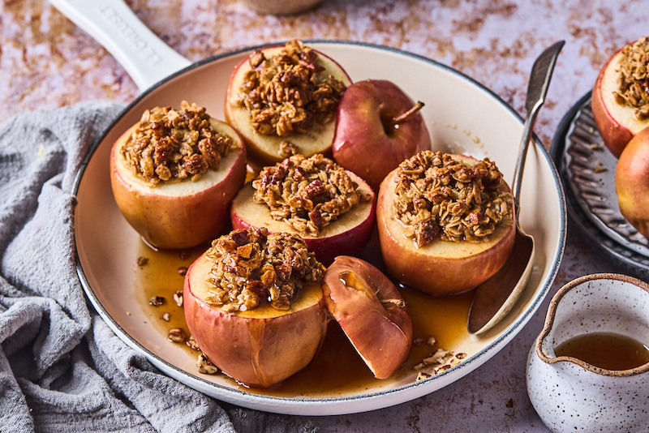

Stuffed Apples
These stuffed apples are great for a cold, rainy day, and taste great!

Ingredients
8 apples
4 tablespoons butter
1/3 cup brown sugar
1/2 teaspoon cinnamon
Crumble Topping
1/2 cup flour
1/4 cup oats
1/3 cup brown sugar
1/4 cup sugar
1/4 teaspoon salt
1/2 teaspoon cinnamon
4 tablespoons butter - chilled and cut into cubes
Instructions
Preheat oven to 400 degrees farenheit. First, prepare the crumble topping. In a medium bowl whisk together flour, oats, brown sugar, sugar, salt, and cinnamon. Cut in the butter with a pastry knife, or two forks, or with your hands until mixture is crumbly. Set aside.
Peel and chop 4 of the apples. Add chopped apples, butter, brown sugar, and cinnamon to a medium sauce pan and saute over medium heat for 8-10 minutes or until apples are tender. Remove from heat.
Chop the tops off of the remaining 4 apples and use a spoon to scoop out the flesh. Discard the flesh or save it for another recipe.You do not need to get every little bit out, just enough to make a bowl for the filling.
Fill scooped-out apples with apple filling from the sauce pan. Top with a generous amount of crumble topping.
Place stuffed apples on a baking sheet and bake for 10-15 minutes until crumble topping is crispy. Serve warm and top with ice cream and caramel sauce if desired. Enjoy!
Home Page